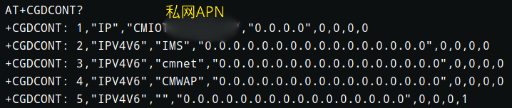

Communication Module Overview
In the connected-car domain, the TCU (Telematics Control Unit) is an indispensable unit in an internet-connected vehicle (also called a T-Box, Telematics Box). The TCU’s networking capability is implemented by a cellular communication module (also called an M2M module). The baseband chipsets used by these modules almost always support multiple carriers, which gives OEMs more flexibility when choosing network operators.
Over the past four years of researching connected-car security, we have completed security research on dozens of mainstream domestic telematics products, analyzed the security of TCUs from multiple OEMs and Tier 1 suppliers, and gained a deeper understanding of the current security posture of TCUs used in the domestic market. As the external internet-facing communication interface of a vehicle, the cellular module is one of the most critical components to secure, because the broadest-coverage remote attacks almost always involve the cellular module in one way or another.
There are many Tier 1 suppliers and the TCU products vary. However, the automotive-grade cellular modules used domestically tend to be a small set of models. Below is a simple classification of vendors. Whether praising or criticizing, we will not name specific domestic vendors.
| Vendor | Notes |
|---|---|
| Vendor H | Multiple automotive-grade modules, very high domestic market share, strong technical capability, relatively expensive |
| Vendor Q | A well-known module vendor; automotive-grade modules mainly used on mid/low-end models; as usable as Vendor H’s modules |
| Vendor Z | Mostly used in IoT devices; also has automotive-grade modules, but with very low market share |
| Vendor F | Tier 1; modules may be OEM’ed by Vendor H; mainly used on mid/low-end models |
| Vendor L | A solid, average vendor |
| Vendor S | Very large market share in cellular modules, but not dominant in the connected-car domain |
| Sierra | A large vendor of M2M wireless communication products and solutions |
| Telit | Headquartered in Italy; Telit is a leading global vendor of M2M wireless communication products and solutions |
Development Materials
Before testing, you need official materials. If there is no documentation, the research will likely be blocked. We compared documentation-related attributes for these vendors as shown below. “Richness” roughly reflects whether there are references for debugging or boot flows. “Security guidance” is considered present as long as the documentation mentions any security-related practice (e.g., setting debug keys, disabling debug ports).
| Vendor | Documentation confidentiality | Documentation richness | Security guidance |
|---|---|---|---|
| Vendor H | Source code is open; docs not public | High | Yes |
| Vendor Q | Source code closed; docs partially public | Medium | No |
| Vendor Z | Source code closed; some docs available to foreigners | Low | No |
| Vendor F | Source code closed; docs not public | Unknown | Unknown |
| Vendor L | Source code closed; docs not public | Low | Unknown |
| Vendor S | Source code closed; docs not public | Unknown | Unknown |
| Sierra | Source code is open; hardware docs not public | Medium | Yes |
| Telit | Source code closed; docs partially public | High | Unknown |
Sierra doesn’t provide much hardware documentation, but there is plenty of software documentation, and there are open-source projects on GitHub. The docs sometimes include security advice.
Vendor H’s module code used to be closed by default. I emailed Vendor H and tried to request access “by following the process” (this is how some people handle it), but because the products are sold domestically, the overseas support redirected me to the CN support, and the CN support played dumb. After the trade war started, Vendor H also open-sourced the cellular module code. Distributors don’t provide deeper development materials unless you sign an NDA. Still, Vendor H’s documentation does include security guidance.
Vendor Q provides documentation officially, but recently some materials have become unavailable to download. After signing an NDA with Vendor Q, the materials provided were mostly source code and standard development docs—still no security guidance.
Hardware Appearance
Vendor H used Qualcomm solutions in earlier products, and gradually switched to HiSilicon LTE Cat6 solutions later—commonly HI6932. Other vendors mostly use Qualcomm MDM96xx; the most common baseband chips are MDM9615 and MDM9628.
The left image shows a HiSilicon solution; the right image shows a Qualcomm solution. Storage is typically a DDR2 + NAND Flash MCP package, and most storage chips are Micron. Most modules use LGA packages to avoid exposing pins directly.

For non-automotive-grade modules, such as Vendor Z’s charging pile solution, an LCC package may be used, where all pins are exposed externally.

However, some automotive-grade modules also use LCC packages—e.g., the left image is Vendor L’s module. The right image is a Tier 1 using a non-automotive-grade module from Vendor S.

With hardware design materials, we can label each pin on the package and identify external interfaces that may be abused.

TCU Solution Types
At a high level, there are two major implementation patterns for cellular modules in TCU solutions: an “external MCU + module” design and an “OpenCPU” design.
In the external MCU + module design, all business logic lives on the MCU. The cellular module mainly acts as a network interface card, or provides a TCP/IP and SSL stack. This design places higher requirements on the MCU and cannot fully utilize the cellular module’s capability. Non-automotive-grade modules usually have mediocre performance, so this approach is suitable for traditional IoT devices. But some Tier 1 TCUs also use this approach, which is somewhat surprising.

In an OpenCPU-like design, the business logic is placed inside the cellular module, and the MCU only handles power management and peripheral interfaces. Other vendors likely have similar concepts but may not call it “OpenCPU”. The term “OpenCPU” is rarely seen abroad—it appears to be a concept popularized domestically by Vendor H, and later adopted by other local vendors. Since terminology tends to be shaped by the market leader, we will also use “OpenCPU” in the rest of this article.

Attack Surface
Common attack entry points include:
- Network layer
- CAN-Bus
- Ethernet
- WLAN
- Bluetooth
- Cellular
- Hardware layer
- UART
- JTAG
- SDIO
- SPI
- SWD
- E-SIM
For the cellular module itself, the attack scenarios generally fall into the following categories:
- Information disclosure: obtain privacy-related data or data useful for attacks from various debugging entry points.
- Man-in-the-middle (MitM): attack protocols and inject malicious data to trigger unintended behaviors.
- Firmware extraction: extract and parse NAND Flash contents through various means.
- Get shell: gain command execution capability for further exploitation.
- Firmware tampering: flash backdoored firmware via different paths and successfully boot it.
- Network device pivoting: wire out the USB interface and use it as a 4G NIC to penetrate internal networks.
Based on these directions, you can define concrete attack scenarios. The last one is straightforward, so we won’t expand on it here.
Information Disclosure Scenario: obtain information for intranet penetration testing
For TCUs using the external MCU design, sniff the UART communication between the MCU and the LTE module to obtain APN configuration information. Alternatively, wire directly to the UART interface responsible for AT commands and query the network configuration.

You can also extract the external eMMC and analyze log files to recover APN configuration information, or obtain debugging APN information via UART logs.

Then, by wiring to the E-SIM, you can pivot into the OEM’s or Tier 1’s internal network.

Obtain TSP service addresses from UART logs:

For servers using mutual TLS authentication—especially for external MCU TCUs—you can sniff AT communications to extract the SSL client certificate and access the server side.

MitM Scenario 1: hijack the module’s network channel to deliver unintended commands
If the client does not authenticate the server, then as long as you can hijack traffic to a malicious TSP, the malicious TSP can act as a relay and inject its own payload.

If the communication code supports two protocol suites—one unencrypted and one AES-encrypted—you can downgrade the protocol during the handshake. This allows you to analyze the protocol format and inject commands into the vehicle.

“Unintended commands” here refers to vehicle-control commands implemented at the MCU layer but not yet implemented at the TSP layer.

MitM Scenario 2: SMS hijacking attacks
In some situations, vehicles need SMS to wake up. Some developers also try to support vehicle remote control when data is unavailable. One shared-car module accepts SMS-based AT commands to control the vehicle body—meaning you can attack it simply by sending an SMS. That design is, bluntly, irresponsible.
In another early software version of a vehicle, when data was unavailable the platform would deliver vehicle-control commands through an SMS tunnel. Early on, it neither authenticated the platform’s phone number nor used signatures. The format was special: no encryption, only VIN and Base64.
You can retrieve SMS content via an external AT interface. You can also sniff via a fake base station, then use AT commands to send SMS to other phone numbers, obtain the M2M SIM number, and then send vehicle-control commands to that number from another phone.

In the next version, a message authentication code (MAC) check was added. The signature used VIN + a unique dynamic secret; the dynamic secret was synchronized from the cloud over a mutually authenticated channel, but the key was deleted on every sleep cycle. As in scenario 1, if you prevent the module from using the data network, it cannot sync the key from the cloud, and can only accept SMS—therefore this version remained compatible with both protocols.

security_flag automatically becomes 00, and the program will skip the MAC verification.

In the current version, the secret key is no longer automatically deleted, meaning this part of the process is safe.
Firmware Extraction Scenario: obtain critical files via firmware extraction
Remove the NAND Flash from the SoC:

Wire to the pins and use a programmer to extract the data, then reconstruct the filesystem:

After that, you can analyze the client program in an OpenCPU solution and may even recover client certificates.

Among these vendors, only Telit protects the NAND Flash with epoxy. Forcibly removing it can also damage the PCB.

So we used sandpaper to polish it down and expose the pads:

Then perform wiring:

If you don’t want to wire, and you can find a JTAG interface, you can use OpenOCD to extract firmware. Currently, only Vendor H provides JTAG labeling and also has dedicated security guidance for JTAG debugging—developers simply ignored it.

You need to time the interruption properly:

After extracting files, the next step is reversing and debugging. QEMU usually won’t meet requirements—these systems often have many Android characteristics and require peripheral emulation—so using a development board is often more practical.
GetShell-1: access debugging services over the network
Some devices enable network ADB by default and listen on 0.0.0.0. Any device on the same network can access the service. If the TCU has WLAN capability, you can enable WLAN via AT commands, or use an existing WLAN to reach network ADB. Otherwise, hijack the cellular network.

The speed, however, is not ideal:

For some private APN tunnels without proper isolation, after compromising one device, you can move laterally to compromise other cellular modules.

GetShell-2: obtain a root shell via hardware debugging ports
Sometimes the kernel cmdline configures tty to point directly to an external UART port:

Weak credentials are enough to get a shell:

If there is no direct TTY, there are other ways to obtain a shell through UART. For Vendor Q’s modules, you can send AT+QLINUXCMD="your command" to execute commands, and even forward the output to the GNSS UART port:
AT+QLINUXCMD="ps" > /dev/ttyGS0
Sometimes this command is disabled—but that’s fine. We can wire out the module’s USB lines, use AT commands to switch USB modes, modify the USB VID/PID so the system recognizes it as an Android device, and then use ADB to access it.

GetShell-3: trigger USB debugging from the MCU side
Sometimes Tier 1 suppliers leave backdoors in the system. Using such a backdoor, you can switch USB modes and get a shell.
The data flow is as follows: you can send a trigger command over CAN bus or in the MCU-to-LTE module communication channel. This example uses a Telit module; the backdoor is implemented by the Tier 1 supplier.
CAN-bus->MCU->LTE Module


Firmware Tampering Scenarios
For automotive-grade cellular modules, FOTA is mostly handled by third-party companies (Vendor F’s devices use Red Bend), or implemented by Tier 1 suppliers with their own secure protocols. Sometimes upgrades can also be triggered via the IVI. OEMs have paid increasing attention to secure transmission in recent years; in the past two years we have not seen direct cases of hijacking the cellular network to tamper with module firmware. Either the solution wasn’t OpenCPU, or secure transport was used. In most real-world cases, attackers tamper firmware by first gaining OTA platform access and then pushing malicious firmware directly.
Another category is local tampering. First you must obtain firmware (via extraction or building from source). Then enter a special mode: for Telit modules, toggling specific pins can enter Qualcomm 9008 mode and Fastboot mode. The MDM96xx family does not have public Sahara support, so you cannot extract firmware like phone forensics, nor flash arbitrary images like typical “unbrick” workflows. However, once you reboot into Fastboot, flashing becomes easy. Flashing may be easy, but booting isn’t: Telit verifies signatures. Some Vendor Q and Vendor H modules also have special local flashing methods, such as using development firmware images or flashing via JTAG.
- For FOTA without a secure transport mechanism, you can tamper the upgrade package in transit.
- If the upgrade program does not verify signatures, firmware can be flashed successfully; most modules do support signature verification.
- If you modify boot-related partitions, modules with secure boot can prevent this attack (e.g., Vendor H, Vendor Q).
Thoughts
What harm can these attacks cause?
The TCU has a CAN-bus interface. For an OpenCPU solution, once you obtain root on the cellular module, in many scenarios you can reflash MCU firmware and get access to the CAN-bus domain where the TCU resides, which can further compromise the vehicle and even impact personal safety.
Who is really at fault?
The vulnerabilities behind the scenarios above are not entirely the module vendor’s fault (aside from some “hard” design flaws). The primary issue is that Tier 1 suppliers did not consider security at the design stage. That said, module vendors also have a responsibility to raise Tier 1 suppliers’ security awareness.
What should be done to prevent these problems?
The security gaps between these modules mainly reflect differences in the development process and the built-in operating system.
First, withholding documentation does not automatically make a module secure. Vendor H discloses more than Vendor Q, but if you consider security guidance, Vendor H’s devices are still somewhat safer than Vendor Q’s. Module vendors should provide production hardening guidance at every point that could lead to exploitation, so developers know what to do.
Second, in product positioning, Tier 1 suppliers should choose modules carefully. If it’s for a vehicle, they should use automotive-grade modules.
Developers should improve their security awareness. The scenarios listed above are either misconfigurations or backdoors deliberately added by developers. The underlying ideas are not complicated.
Not every Tier 1 supplier can build a secure system. Many domestic modules run everything as root; if you adopt an OpenCPU solution, you should consider privilege separation. Sierra modules provide the Legato system, where each telematics application runs in an isolated sandbox.

Telit modules not only include hardware anti-tamper protections, but also use OS-level tricks. It looks like root on the surface, but the system is actually chroot’ed into another directory and does not have full privileges—it cannot even access character devices.
The Ministry of Industry and Information Technology proposed an action plan for the connected-car (intelligent connected vehicle) industry. Combined with the “China VI” emission policy implemented in 2020, traditional cars will occupy less and less of the market, and connected cars will take their place. This also means connected cars will face many security problems in the future. Whether it’s today’s telematics or tomorrow’s V2X, cellular modules will be a core component.

References
Intelligent Vehicle Innovation and Development Strategy (Draft for Comments)
 CC BY-NC-SA 4.0
CC BY-NC-SA 4.0